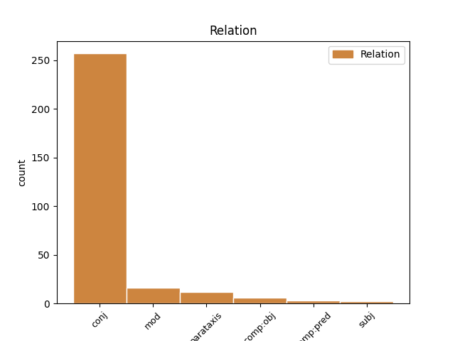
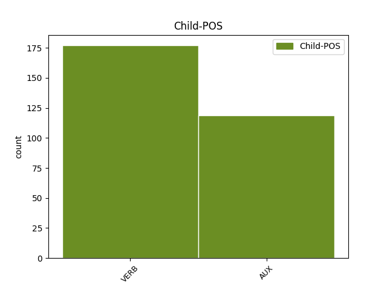

Distribution of features within this leaf


Agreement Rules sorted by frequency.
- When the dependent token is the conjunct(conj) of the head token, and the dependent token is VERB.
1 Nessun _ _ _ _ 0 _ _ _
2 documento _ _ _ _ 0 _ _ _
3 contemporaneo _ _ _ _ 0 _ _ _
4 descrive _ _ _ _ 0 _ _ _
5 l' _ _ _ _ 0 _ _ _
6 aspetto _ _ _ _ 0 _ _ _
7 fisico _ _ _ _ 0 _ _ _
8 di _ _ _ _ 0 _ _ _
9 Shakespeare _ _ _ _ 0 _ _ _
10 e _ _ _ _ 0 _ _ _
11 non _ _ _ _ 0 _ _ _
12 ci _ _ _ _ 0 _ _ _
13 sono essere VERB V Mood=Ind|Number=Plur|Person=3|Tense=Pres|VerbForm=Fin 0 _ _ _
14 prove _ _ _ _ 0 _ _ _
15 che _ _ _ _ 0 _ _ _
16 lui _ _ _ _ 0 _ _ _
17 abbia _ _ _ _ 0 _ _ _
18 mai _ _ _ _ 0 _ _ _
19 commissionato _ _ _ _ 0 _ _ _
20 un _ _ _ _ 0 _ _ _
21 suo _ _ _ _ 0 _ _ _
22 ritratto _ _ _ _ 0 _ _ _
23 , _ _ _ _ 0 _ _ _
24 così _ _ _ _ 0 _ _ _
25 , _ _ _ _ 0 _ _ _
26 il _ _ _ _ 0 _ _ _
27 ritratto _ _ _ _ 0 _ _ _
28 di _ _ _ _ 0 _ _ _
29 Droeshout _ _ _ _ 0 _ _ _
30 che _ _ _ _ 0 _ _ _
31 Ben _ _ _ _ 0 _ _ _
32 Jonson _ _ _ _ 0 _ _ _
33 considerò _ _ _ _ 0 _ _ _
34 veritiero _ _ _ _ 0 _ _ _
35 , _ _ _ _ 0 _ _ _
36 e _ _ _ _ 0 _ _ _
37 il _ _ _ _ 0 _ _ _
38 suo _ _ _ _ 0 _ _ _
39 monumento _ _ _ _ 0 _ _ _
40 a _ _ _ _ 0 _ _ _
41 Stratford _ _ _ _ 0 _ _ _
42 forniscono fornire VERB V Mood=Ind|Number=Plur|Person=3|Tense=Pres|VerbForm=Fin 13 conj _ _
43 la _ _ _ _ 0 _ _ _
44 migliore _ _ _ _ 0 _ _ _
45 testimonianza _ _ _ _ 0 _ _ _
46 di _ _ _ _ 0 _ _ _
47 il _ _ _ _ 0 _ _ _
48 suo _ _ _ _ 0 _ _ _
49 aspetto _ _ _ _ 0 _ _ _
50 fisico _ _ _ _ 0 _ _ _
51 . _ _ _ _ 0 _ _ _
1 Gli _ _ _ _ 0 _ _ _
2 studiosi _ _ _ _ 0 _ _ _
3 trovano trovare VERB V Mood=Ind|Number=Plur|Person=3|Tense=Pres|VerbForm=Fin 0 _ _ _
4 prove _ _ _ _ 0 _ _ _
5 di _ _ _ _ 0 _ _ _
6 la _ _ _ _ 0 _ _ _
7 sua _ _ _ _ 0 _ _ _
8 fede _ _ _ _ 0 _ _ _
9 , _ _ _ _ 0 _ _ _
10 sia _ _ _ _ 0 _ _ _
11 a _ _ _ _ 0 _ _ _
12 favore _ _ _ _ 0 _ _ _
13 che _ _ _ _ 0 _ _ _
14 contro _ _ _ _ 0 _ _ _
15 , _ _ _ _ 0 _ _ _
16 a _ _ _ _ 0 _ _ _
17 l' _ _ _ _ 0 _ _ _
18 interno _ _ _ _ 0 _ _ _
19 di _ _ _ _ 0 _ _ _
20 le _ _ _ _ 0 _ _ _
21 sue _ _ _ _ 0 _ _ _
22 opere _ _ _ _ 0 _ _ _
23 , _ _ _ _ 0 _ _ _
24 ma _ _ _ _ 0 _ _ _
25 la _ _ _ _ 0 _ _ _
26 verità _ _ _ _ 0 _ _ _
27 non _ _ _ _ 0 _ _ _
28 è essere AUX V Mood=Ind|Number=Sing|Person=3|Tense=Pres|VerbForm=Fin 3 conj _ _
29 dimostrabile _ _ _ _ 0 _ _ _
30 . _ _ _ _ 0 _ _ _
1 " _ _ _ _ 0 _ _ _
2 Quello _ _ _ _ 0 _ _ _
3 che _ _ _ _ 0 _ _ _
4 Balzac _ _ _ _ 0 _ _ _
5 ha _ _ _ _ 0 _ _ _
6 iniziato _ _ _ _ 0 _ _ _
7 " _ _ _ _ 0 _ _ _
8 , _ _ _ _ 0 _ _ _
9 dice dire VERB V Mood=Ind|Number=Sing|Person=3|Tense=Pres|VerbForm=Fin 14 parataxis _ _
10 Lehan _ _ _ _ 0 _ _ _
11 , _ _ _ _ 0 _ _ _
12 " _ _ _ _ 0 _ _ _
13 Flaubert _ _ _ _ 0 _ _ _
14 ha avere AUX VA Mood=Ind|Number=Sing|Person=3|Tense=Pres|VerbForm=Fin 0 _ _ _
15 aiutato _ _ _ _ 0 _ _ _
16 a _ _ _ _ 0 _ _ _
17 finir _ _ _ _ 0 _ _ _
18 lo _ _ _ _ 0 _ _ _
19 . _ _ _ _ 0 _ _ _
1 " _ _ _ _ 0 _ _ _
2 quel _ _ _ _ 0 _ _ _
3 re _ _ _ _ 0 _ _ _
4 di _ _ _ _ 0 _ _ _
5 uno _ _ _ _ 0 _ _ _
6 Shakespeare _ _ _ _ 0 _ _ _
7 " _ _ _ _ 0 _ _ _
8 , _ _ _ _ 0 _ _ _
9 il _ _ _ _ 0 _ _ _
10 saggista _ _ _ _ 0 _ _ _
11 Thomas _ _ _ _ 0 _ _ _
12 Carlyle _ _ _ _ 0 _ _ _
13 scrisse scrivere VERB V Mood=Ind|Number=Sing|Person=3|Tense=Past|VerbForm=Fin 0 _ _ _
14 in _ _ _ _ 0 _ _ _
15 il _ _ _ _ 0 _ _ _
16 1840 _ _ _ _ 0 _ _ _
17 , _ _ _ _ 0 _ _ _
18 " _ _ _ _ 0 _ _ _
19 egli _ _ _ _ 0 _ _ _
20 non _ _ _ _ 0 _ _ _
21 risplende risplendere VERB V Mood=Ind|Number=Sing|Person=3|Tense=Pres|VerbForm=Fin 13 mod _ SpaceAfter=No
22 , _ _ _ _ 0 _ _ _
23 tra _ _ _ _ 0 _ _ _
24 la _ _ _ _ 0 _ _ _
25 sovranità _ _ _ _ 0 _ _ _
26 incoronata _ _ _ _ 0 _ _ _
27 , _ _ _ _ 0 _ _ _
28 sopra _ _ _ _ 0 _ _ _
29 noi _ _ _ _ 0 _ _ _
30 tutti _ _ _ _ 0 _ _ _
31 , _ _ _ _ 0 _ _ _
32 come _ _ _ _ 0 _ _ _
33 il _ _ _ _ 0 _ _ _
34 più _ _ _ _ 0 _ _ _
35 nobile _ _ _ _ 0 _ _ _
36 , _ _ _ _ 0 _ _ _
37 il _ _ _ _ 0 _ _ _
38 più _ _ _ _ 0 _ _ _
39 gentile _ _ _ _ 0 _ _ _
40 , _ _ _ _ 0 _ _ _
41 e _ _ _ _ 0 _ _ _
42 il _ _ _ _ 0 _ _ _
43 più _ _ _ _ 0 _ _ _
44 forte _ _ _ _ 0 _ _ _
45 di _ _ _ _ 0 _ _ _
46 i _ _ _ _ 0 _ _ _
47 segni _ _ _ _ 0 _ _ _
48 spericolati _ _ _ _ 0 _ _ _
49 ; _ _ _ _ 0 _ _ _
1 Shakespare _ _ _ _ 0 _ _ _
2 li _ _ _ _ 0 _ _ _
3 mescola mescolare VERB V Mood=Ind|Number=Sing|Person=3|Tense=Pres|VerbForm=Fin 0 _ _ _
4 per _ _ _ _ 0 _ _ _
5 tutta _ _ _ _ 0 _ _ _
6 la _ _ _ _ 0 _ _ _
7 sua _ _ _ _ 0 _ _ _
8 carriera _ _ _ _ 0 _ _ _
9 , _ _ _ _ 0 _ _ _
10 Romeo _ _ _ _ 0 _ _ _
11 e _ _ _ _ 0 _ _ _
12 Giulietta _ _ _ _ 0 _ _ _
13 è essere AUX V Mood=Ind|Number=Sing|Person=3|Tense=Pres|VerbForm=Fin 3 mod _ _
14 forse _ _ _ _ 0 _ _ _
15 l' _ _ _ _ 0 _ _ _
16 esempio _ _ _ _ 0 _ _ _
17 migliore _ _ _ _ 0 _ _ _
18 di _ _ _ _ 0 _ _ _
19 questa _ _ _ _ 0 _ _ _
20 fusione _ _ _ _ 0 _ _ _
21 di _ _ _ _ 0 _ _ _
22 stili _ _ _ _ 0 _ _ _
23 . _ _ _ _ 0 _ _ _
1 In _ _ _ _ 0 _ _ _
2 gli _ _ _ _ 0 _ _ _
3 anni _ _ _ _ 0 _ _ _
4 1593 _ _ _ _ 0 _ _ _
5 e _ _ _ _ 0 _ _ _
6 1594 _ _ _ _ 0 _ _ _
7 , _ _ _ _ 0 _ _ _
8 quando _ _ _ _ 0 _ _ _
9 i _ _ _ _ 0 _ _ _
10 teatri _ _ _ _ 0 _ _ _
11 rimasero rimanere VERB V Mood=Ind|Number=Plur|Person=3|Tense=Past|VerbForm=Fin 0 _ _ _
12 chiusi chiudere VERB V Mood=Ind|Number=Sing|Person=1|Tense=Past|VerbForm=Fin 11 comp:pred _ _
13 a _ _ _ _ 0 _ _ _
14 causa _ _ _ _ 0 _ _ _
15 di _ _ _ _ 0 _ _ _
16 la _ _ _ _ 0 _ _ _
17 peste _ _ _ _ 0 _ _ _
18 , _ _ _ _ 0 _ _ _
19 Shakespeare _ _ _ _ 0 _ _ _
20 pubblicò _ _ _ _ 0 _ _ _
21 due _ _ _ _ 0 _ _ _
22 poemi _ _ _ _ 0 _ _ _
23 narrativi _ _ _ _ 0 _ _ _
24 da _ _ _ _ 0 _ _ _
25 il _ _ _ _ 0 _ _ _
26 tema _ _ _ _ 0 _ _ _
27 erotico _ _ _ _ 0 _ _ _
28 , _ _ _ _ 0 _ _ _
29 Venere _ _ _ _ 0 _ _ _
30 e _ _ _ _ 0 _ _ _
31 Adone _ _ _ _ 0 _ _ _
32 e _ _ _ _ 0 _ _ _
33 il _ _ _ _ 0 _ _ _
34 ratto _ _ _ _ 0 _ _ _
35 di _ _ _ _ 0 _ _ _
36 Lucrezia _ _ _ _ 0 _ _ _
37 . _ _ _ _ 0 _ _ _
1 Non _ _ _ _ 0 _ _ _
2 è essere AUX V Mood=Ind|Number=Sing|Person=3|Tense=Pres|VerbForm=Fin 0 _ _ _
3 chiaro _ _ _ _ 0 _ _ _
4 per _ _ _ _ 0 _ _ _
5 quali _ _ _ _ 0 _ _ _
6 compagnie _ _ _ _ 0 _ _ _
7 teatrali _ _ _ _ 0 _ _ _
8 Shakespeare _ _ _ _ 0 _ _ _
9 scrisse scrivere VERB V Mood=Ind|Number=Sing|Person=3|Tense=Past|VerbForm=Fin 2 subj _ _
10 le _ _ _ _ 0 _ _ _
11 sue _ _ _ _ 0 _ _ _
12 prime _ _ _ _ 0 _ _ _
13 opere _ _ _ _ 0 _ _ _
14 . _ _ _ _ 0 _ _ _
1 " _ _ _ _ 0 _ _ _
2 Per _ _ _ _ 0 _ _ _
3 arrivare _ _ _ _ 0 _ _ _
4 a _ _ _ _ 0 _ _ _
5 la _ _ _ _ 0 _ _ _
6 verità _ _ _ _ 0 _ _ _
7 " _ _ _ _ 0 _ _ _
8 , _ _ _ _ 0 _ _ _
9 ha avere AUX VA Mood=Ind|Number=Sing|Person=3|Tense=Pres|VerbForm=Fin 24 parataxis _ _
10 scritto _ _ _ _ 0 _ _ _
11 in _ _ _ _ 0 _ _ _
12 la _ _ _ _ 0 _ _ _
13 prefazione _ _ _ _ 0 _ _ _
14 a _ _ _ _ 0 _ _ _
15 Le _ _ _ _ 0 _ _ _
16 Lys _ _ _ _ 0 _ _ _
17 dans _ _ _ _ 0 _ _ _
18 la _ _ _ _ 0 _ _ _
19 Vallée _ _ _ _ 0 _ _ _
20 , _ _ _ _ 0 _ _ _
21 " _ _ _ _ 0 _ _ _
22 gli _ _ _ _ 0 _ _ _
23 scrittori _ _ _ _ 0 _ _ _
24 usano usare VERB V Mood=Ind|Number=Plur|Person=3|Tense=Pres|VerbForm=Fin 0 _ _ _
25 qualsiasi _ _ _ _ 0 _ _ _
26 strumento _ _ _ _ 0 _ _ _
27 letterario _ _ _ _ 0 _ _ _
28 che _ _ _ _ 0 _ _ _
29 sembra _ _ _ _ 0 _ _ _
30 capace _ _ _ _ 0 _ _ _
31 di _ _ _ _ 0 _ _ _
32 dare _ _ _ _ 0 _ _ _
33 la _ _ _ _ 0 _ _ _
34 maggior _ _ _ _ 0 _ _ _
35 intensità _ _ _ _ 0 _ _ _
36 vitale _ _ _ _ 0 _ _ _
37 a _ _ _ _ 0 _ _ _
38 i _ _ _ _ 0 _ _ _
39 propri _ _ _ _ 0 _ _ _
40 personaggi _ _ _ _ 0 _ _ _
41 " _ _ _ _ 0 _ _ _
42 . _ _ _ _ 0 _ _ _
1 " _ _ _ _ 0 _ _ _
2 divorava divorare VERB V Mood=Ind|Number=Sing|Person=3|Tense=Imp|VerbForm=Fin 0 _ _ _
3 libri librare VERB V Mood=Ind|Number=Sing|Person=2|Tense=Pres|VerbForm=Fin 2 comp:obj _ _
4 di _ _ _ _ 0 _ _ _
5 ogni _ _ _ _ 0 _ _ _
6 tipo _ _ _ _ 0 _ _ _
7 , _ _ _ _ 0 _ _ _
8 nutrendo _ _ _ _ 0 _ _ _
9 si _ _ _ _ 0 _ _ _
10 indiscriminatamente _ _ _ _ 0 _ _ _
11 di _ _ _ _ 0 _ _ _
12 opere _ _ _ _ 0 _ _ _
13 religiose _ _ _ _ 0 _ _ _
14 , _ _ _ _ 0 _ _ _
15 di _ _ _ _ 0 _ _ _
16 storia _ _ _ _ 0 _ _ _
17 e _ _ _ _ 0 _ _ _
18 letteratura _ _ _ _ 0 _ _ _
19 , _ _ _ _ 0 _ _ _
20 filosofia _ _ _ _ 0 _ _ _
21 e _ _ _ _ 0 _ _ _
22 fisica _ _ _ _ 0 _ _ _
23 . _ _ _ _ 0 _ _ _
Disagree Examples:
1 Non _ _ _ _ 0 _ _ _
2 puoi _ _ _ _ 0 _ _ _
3 proporre _ _ _ _ 0 _ _ _
4 od _ _ _ _ 0 _ _ _
5 imporre _ _ _ _ 0 _ _ _
6 alcuna _ _ _ _ 0 _ _ _
7 condizione _ _ _ _ 0 _ _ _
8 relativa _ _ _ _ 0 _ _ _
9 a _ _ _ _ 0 _ _ _
10 l' _ _ _ _ 0 _ _ _
11 opera _ _ _ _ 0 _ _ _
12 che _ _ _ _ 0 _ _ _
13 alteri alterare VERB V Mood=Ind|Number=Sing|Person=2|Tense=Pres|VerbForm=Fin 0 _ _ _
14 o _ _ _ _ 0 _ _ _
15 restringa restringere VERB V Mood=Sub|Number=Sing|Person=3|Tense=Pres|VerbForm=Fin 13 conj _ _
16 i _ _ _ _ 0 _ _ _
17 termini _ _ _ _ 0 _ _ _
18 di _ _ _ _ 0 _ _ _
19 la _ _ _ _ 0 _ _ _
20 presente _ _ _ _ 0 _ _ _
21 licenza _ _ _ _ 0 _ _ _
22 o _ _ _ _ 0 _ _ _
23 l' _ _ _ _ 0 _ _ _
24 esercizio _ _ _ _ 0 _ _ _
25 da _ _ _ _ 0 _ _ _
26 parte _ _ _ _ 0 _ _ _
27 di _ _ _ _ 0 _ _ _
28 il _ _ _ _ 0 _ _ _
29 beneficiario _ _ _ _ 0 _ _ _
30 di _ _ _ _ 0 _ _ _
31 i _ _ _ _ 0 _ _ _
32 diritti _ _ _ _ 0 _ _ _
33 qui _ _ _ _ 0 _ _ _
34 concessi _ _ _ _ 0 _ _ _
35 . _ _ _ _ 0 _ _ _
1 Non _ _ _ _ 0 _ _ _
2 puoi _ _ _ _ 0 _ _ _
3 proporre _ _ _ _ 0 _ _ _
4 od _ _ _ _ 0 _ _ _
5 imporre _ _ _ _ 0 _ _ _
6 alcuna _ _ _ _ 0 _ _ _
7 condizione _ _ _ _ 0 _ _ _
8 relativa _ _ _ _ 0 _ _ _
9 a _ _ _ _ 0 _ _ _
10 l' _ _ _ _ 0 _ _ _
11 opera _ _ _ _ 0 _ _ _
12 che _ _ _ _ 0 _ _ _
13 alteri alterare VERB V Mood=Ind|Number=Sing|Person=2|Tense=Pres|VerbForm=Fin 0 _ _ _
14 o _ _ _ _ 0 _ _ _
15 restringa restringere VERB V Mood=Sub|Number=Sing|Person=3|Tense=Pres|VerbForm=Fin 13 conj _ _
16 i _ _ _ _ 0 _ _ _
17 termini _ _ _ _ 0 _ _ _
18 di _ _ _ _ 0 _ _ _
19 la _ _ _ _ 0 _ _ _
20 presente _ _ _ _ 0 _ _ _
21 licenza _ _ _ _ 0 _ _ _
22 o _ _ _ _ 0 _ _ _
23 l' _ _ _ _ 0 _ _ _
24 esercizio _ _ _ _ 0 _ _ _
25 da _ _ _ _ 0 _ _ _
26 parte _ _ _ _ 0 _ _ _
27 di _ _ _ _ 0 _ _ _
28 il _ _ _ _ 0 _ _ _
29 beneficiario _ _ _ _ 0 _ _ _
30 di _ _ _ _ 0 _ _ _
31 i _ _ _ _ 0 _ _ _
32 diritti _ _ _ _ 0 _ _ _
33 qui _ _ _ _ 0 _ _ _
34 concessi _ _ _ _ 0 _ _ _
35 . _ _ _ _ 0 _ _ _
1 Credo _ _ _ _ 0 _ _ _
2 che _ _ _ _ 0 _ _ _
3 tale _ _ _ _ 0 _ _ _
4 principio _ _ _ _ 0 _ _ _
5 sia essere AUX V Mood=Sub|Number=Sing|Person=3|Tense=Pres|VerbForm=Fin 0 _ _ _
6 un _ _ _ _ 0 _ _ _
7 principio _ _ _ _ 0 _ _ _
8 giuridico _ _ _ _ 0 _ _ _
9 fondamentale _ _ _ _ 0 _ _ _
10 di _ _ _ _ 0 _ _ _
11 la _ _ _ _ 0 _ _ _
12 politica _ _ _ _ 0 _ _ _
13 comune _ _ _ _ 0 _ _ _
14 di _ _ _ _ 0 _ _ _
15 la _ _ _ _ 0 _ _ _
16 pesca _ _ _ _ 0 _ _ _
17 e _ _ _ _ 0 _ _ _
18 qualsiasi _ _ _ _ 0 _ _ _
19 proposta _ _ _ _ 0 _ _ _
20 volta _ _ _ _ 0 _ _ _
21 a _ _ _ _ 0 _ _ _
22 sovvertir _ _ _ _ 0 _ _ _
23 lo _ _ _ _ 0 _ _ _
24 sarebbe essere AUX V Mood=Cnd|Number=Sing|Person=3|Tense=Pres|VerbForm=Fin 5 conj _ _
25 giuridicamente _ _ _ _ 0 _ _ _
26 inammissibile _ _ _ _ 0 _ _ _
27 . _ _ _ _ 0 _ _ _
1 Non _ _ _ _ 0 _ _ _
2 sappiamo sapere VERB V Mood=Ind|Number=Plur|Person=1|Tense=Pres|VerbForm=Fin 0 _ _ _
3 cosa _ _ _ _ 0 _ _ _
4 stia stare AUX VA Mood=Sub|Number=Sing|Person=3|Tense=Pres|VerbForm=Fin 2 comp:obj _ _
5 succedendo _ _ _ _ 0 _ _ _
6 e _ _ _ _ 0 _ _ _
7 quindi _ _ _ _ 0 _ _ _
8 mi _ _ _ _ 0 _ _ _
9 chiedo _ _ _ _ 0 _ _ _
10 perché _ _ _ _ 0 _ _ _
11 si _ _ _ _ 0 _ _ _
12 debba _ _ _ _ 0 _ _ _
13 permettere _ _ _ _ 0 _ _ _
14 a _ _ _ _ 0 _ _ _
15 i _ _ _ _ 0 _ _ _
16 produttori _ _ _ _ 0 _ _ _
17 di _ _ _ _ 0 _ _ _
18 armi _ _ _ _ 0 _ _ _
19 di _ _ _ _ 0 _ _ _
20 l' _ _ _ _ 0 _ _ _
21 Ue _ _ _ _ 0 _ _ _
22 di _ _ _ _ 0 _ _ _
23 trar _ _ _ _ 0 _ _ _
24 ne _ _ _ _ 0 _ _ _
25 profitto _ _ _ _ 0 _ _ _
26 a _ _ _ _ 0 _ _ _
27 scapito _ _ _ _ 0 _ _ _
28 di _ _ _ _ 0 _ _ _
29 persone _ _ _ _ 0 _ _ _
30 innocenti _ _ _ _ 0 _ _ _
31 . _ _ _ _ 0 _ _ _
1 Non _ _ _ _ 0 _ _ _
2 so _ _ _ _ 0 _ _ _
3 se _ _ _ _ 0 _ _ _
4 questa _ _ _ _ 0 _ _ _
5 informazione _ _ _ _ 0 _ _ _
6 sia essere AUX VA Mood=Sub|Number=Sing|Person=3|Tense=Pres|VerbForm=Fin 0 _ _ _
7 corretta _ _ _ _ 0 _ _ _
8 , _ _ _ _ 0 _ _ _
9 ma _ _ _ _ 0 _ _ _
10 noi _ _ _ _ 0 _ _ _
11 di _ _ _ _ 0 _ _ _
12 il _ _ _ _ 0 _ _ _
13 PPE _ _ _ _ 0 _ _ _
14 - _ _ _ _ 0 _ _ _
15 DE _ _ _ _ 0 _ _ _
16 saremmo essere AUX V Mood=Cnd|Number=Plur|Person=1|Tense=Pres|VerbForm=Fin 6 conj _ _
17 comunque _ _ _ _ 0 _ _ _
18 grati _ _ _ _ 0 _ _ _
19 se _ _ _ _ 0 _ _ _
20 il _ _ _ _ 0 _ _ _
21 suddetto _ _ _ _ 0 _ _ _
22 punto _ _ _ _ 0 _ _ _
23 venisse _ _ _ _ 0 _ _ _
24 eliminato _ _ _ _ 0 _ _ _
25 visto _ _ _ _ 0 _ _ _
26 che _ _ _ _ 0 _ _ _
27 il _ _ _ _ 0 _ _ _
28 parlamento _ _ _ _ 0 _ _ _
29 si _ _ _ _ 0 _ _ _
30 è _ _ _ _ 0 _ _ _
31 già _ _ _ _ 0 _ _ _
32 occupato _ _ _ _ 0 _ _ _
33 ripetutamente _ _ _ _ 0 _ _ _
34 di _ _ _ _ 0 _ _ _
35 la _ _ _ _ 0 _ _ _
36 questione _ _ _ _ 0 _ _ _
37 . _ _ _ _ 0 _ _ _